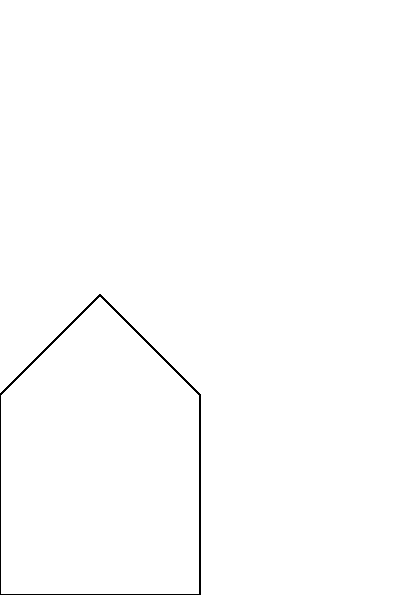

Hello, World
The practice of a "Hello, World!" program, i.e. a simple program to demonstrate that your tool chain works as intended, has many forms. For PostScript this would be outputting a single line. In this chapter we are going to achieve just that.
Start your engines
Getting feedback is important. The sooner, the better. That is why we are going to use Ghostscript.
Ghostscript is
an interpreter for the PostScript® language and PDF files. Ghostscript consists of a PostScript interpreter layer and a graphics library.
You can find some notes about installing Ghostscript in the appendix.
Go ahead and start a Ghostscript session.
Note: Ghostscript on macOS does not have a rendered output. Instead of using the REPL you can write the instructions to a file and use
ps2pdfto generate a PDF or use the PostScript interpreter on https://postscript-render.fly.dev/ for this workshop.
Read-Eval-Print-Loop
When you start Ghostscript the following things happen:
- A window is opened that shows a blank page. The page will show the output of the PostScript program that we enter.
- A Read-Eval-Print-Loop (REPL) is started. Via this REPL we can communicate with the PostScript interpreter.
The REPL first prints a header, something akin
Copyright (C) 2019 Artifex Software, Inc. All rights reserved.
This software is supplied under the GNU AGPLv3 and comes with NO WARRANTY:
see the file COPYING for details.
And offers a prompt
GS>
Let's get moving
We will interact with the page by executing commands in the REPL. The first command will be moveto.
Enter the following line into the REPL.
0 0 moveto
Even when you look closely, the page will not be changed. The only thing that happened is that the current path is extended with a move to the origin. What this means will become clear in later chapters.
Draw the line
The next step in this walkthrough is drawing the line. This can be achieved with the lineto command
100 100 lineto
Again, nothing seems to have changed on the page. The PostScript interpreter only extended the current path with a line.
Stroke the current path
Only when we issue the stroke command, will the PostScript interpreter update the page.
stroke
Celebrate 🎉
With a line drawn on the page, you are well on your way to becoming a master of PostScript!
Final Thoughts
showpage
If you want to experiment some more it could be nice to start with a clean slate. The showpage command can be used for this. When you issue it
showpage
The REPL will respond with
>>showpage, press <return> to continue<<
When you continue the page is updated and you start in a fresh state. For an actual printer, the showpage command would instruct the printer to print all the marks on actual paper!
newpath
We have seen that the PostScript interpreter maintains a current path, and moveto and lineto commands modify it and stroke renders it on the page.
If you want to make sure that you start with a clean slate you can issue the newpath command. This will clear the current path and allows you to start anew.
Summary
We have created our first PostScript program by entering the following commands in the REPL.
newpath
0 0 moveto
100 100 lineto
stroke
showpage
It uses the following commands:
newpath: clears the current path.moveto: extends the current path, and sets the current point.lineto: extends the current path with a line from the current point to the point as specified by the arguments.stroke: draws the current path.showpage: Evicts the page and starts a new one.
Exercises
- What does the following program draw?
newpath
0 100 moveto
100 0 lineto
0 0 moveto
100 100 lineto
stroke
showpage
- With the commands you learned draw a simple house that looks like the house below 